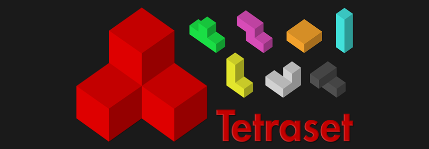
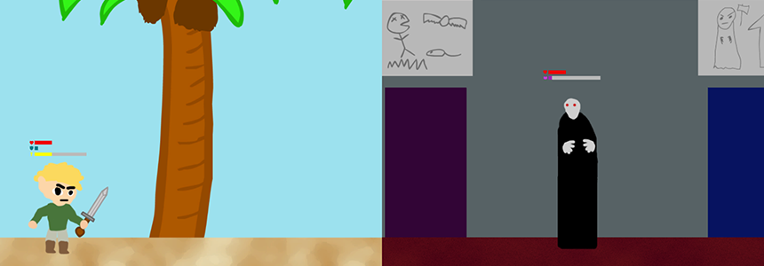
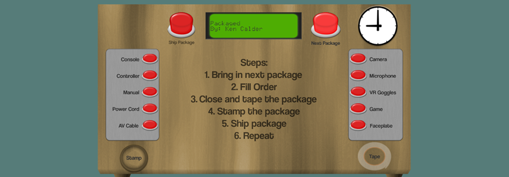

Released Games
Tetraset
Tetraset is a 3D-Tetris game made in Unity with C#. It started as an experiment in creating a 3D version of Tetris and in UI design to compensate for the complexities and issues that arise taking Tetris from 2D to 3D. It was completed over summer 2014 in my spare time and first released on Android in November. I learned a lot about creating scalable UIs, designing levels, improving my knowledge of C#, and creating promotional material and putting it on the Google Play store.
Even though it was a good learning experience the experiment was only half a success as I didn't implement the UI in the way I originally intended to solve issues such as viewing occluded cubes because I took an intensive teaching ESL course so I had to put it down. When I finished the course I decided to move on to other projects and spent 2 weeks polishing the game before publishing it on Google Play
Gamejam Games
These are games I made during previous Ludum Dare game jams. Each game was made within 48 hours and all the code and assets, including art and sound, were made by me within that time.
Make Your Time
The theme for the competition was the "You are the monster". It is a 2D management game made in Unity. The idea for the game came from the question “what does the final boss in a game do while you are adventuring”. You play as the final boss and while you watch an AI controlled hero on his journey to fight you, you have to summon minions to damage him and spring traps to slow him down while you prepare for the fight. Early on I realized that the scope of this game would be too large for the 48 hour time limit so I decided to cut some content like a playable final battle. While there was nothing particularly difficult in making this game, it took a long time due to the amount of content in the game. The end result ended up having a lot of the test art become the final art, having no time for any polish, and the mechanics lacking balancing pass.
Packaged
The theme for the competition was the "Entire Game on One Screen". It is a 2D simulation game made in Unity. My take on the theme was the entire game is in the same place having the camera never move and all actions are performed on a workstation of a box packer in a factory. The game was inspired by Papers, Please and I had a lot of fun making it. I burned myself out making Beacon the previous competition so I decided to do a 2D game with a smaller scope. I was able to put more polish on this game and I'm pleased with how it turned out.
Beacon
The theme for the competition was "Connected Worlds". It is a 3D platforming puzzle game made in Unity. I spent awhile trying to think of an idea with a reasonable scope that I could complete within 48 hours. I was able to come up with a good idea that was achievable, however I didn't get much sleep and I only finished it near the very end of the 48 hours. The game takes place in 2 worlds: one where there is light but no sound, and the other is completely dark and you have to navigate by sound. The goal is to collect all the shards in both worlds and place them on the pedestals in the light world. Periodically you are hit by a wave of energy and transported between the two world. The game has some mechanical flaws and frustrating level design but I am happy with the implementation of the code, creating all the assets, and putting them in the world considering the time constraint.
Unfinished Prototypes
These are games I started to make but are now on haitus for the near future. These prototypes were made in ActionScript 3 with the citrus game engine API.